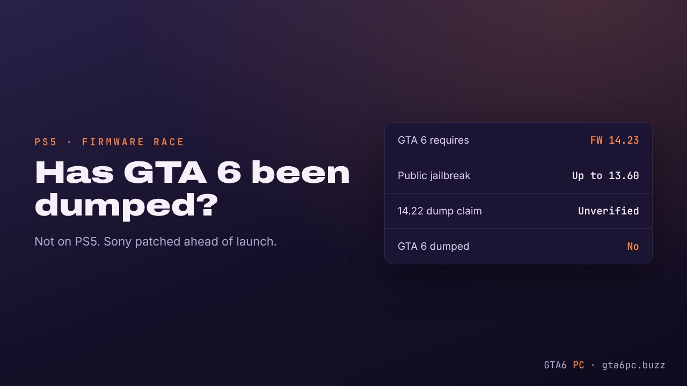
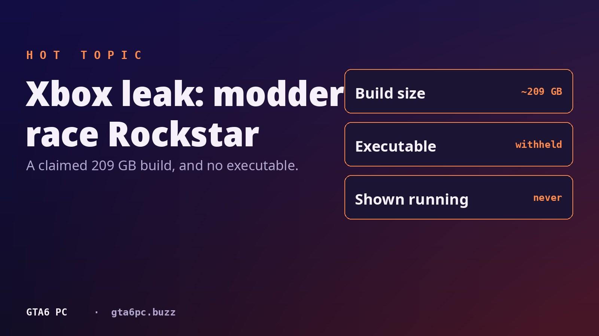

Leaks & PC ports
Cyberleek, the leaked Xbox build, AnyPS5, Leonida, dumps and every unofficial route to GTA 6 on PC.
 Cyberleek exe
Cyberleek exeDid Cyberleek Release the GTA 6 Executable? (November 23 Update)
Cyberleek promised to release the missing GTA 6 Xbox executable on November 23, tied to its crypto token. Here's the latest status and what it would and wouldn't change.
 Leonida project
Leonida projectLeonida: The GTA 6 Xbox-to-PC Recompilation Project Explained
Leonida is an open-source project trying to recompile GTA 6's Xbox version to run natively on PC. It has translated 26,503 shaders, but the game doesn't boot yet.

PS5 dump statusHas GTA 6 Been Dumped on PS5? Firmware 14.23 Explained
Sony made PS5 firmware 14.23 mandatory for GTA 6, while public jailbreaks stop at 13.60. Here's why GTA 6 hasn't been dumped and what it means for PC projects.
 Leaks timeline
Leaks timelineEvery Major GTA 6 Leak: From the 2022 Hack to the Cyberleek Xbox Build
GTA 6 is one of the most-leaked games ever. Here's a timeline of the biggest leaks, from the 2022 development videos to the early trailer and the 2026 Xbox build.
 AnyPS5 & GTA 6
AnyPS5 & GTA 6AnyPS5 and GTA 6: Can PS5 Games Run on PC Without an Emulator?
AnyPS5 is an open-source project that turns PS5 games into native PC programs. Here's how it works, how far it's got, and why GTA 6 isn't running on it.
 PC leaks
PC leaksGTA 6 PC Leak Explained: The Cyberleek Xbox Build and What's Real
A hacker group says it leaked a near-complete GTA 6 Xbox build. Here's what was released, whether it can run on PC, the fake videos going around, and the malware risk.
 Built for PC
Built for PCIs GTA 6 Built for PC? Native Port vs Emulation vs Recompilation
"Native PC build", "emulated" and "recompiled" mean very different things. Here's what each one means for GTA 6, and which kind of PC version is actually real.
 Xbox build on PC
Xbox build on PCCan the Leaked GTA 6 Xbox Build Run on PC? (November 2026)
A leaked GTA 6 Xbox build has people asking whether it can run on Windows. Here's why it can't yet, what stands in the way, and why fake download sites are the real danger.
 PC emulator
PC emulatorGTA 6 PC Emulator: Can a PS5 or Xbox Emulator Run It?
No PS5 or Xbox Series emulator can run GTA 6 today. Here is what AnyPS5, KytyPS5 and the other projects can actually do, why GTA 6 is blocked at the first step, and how to judge the next claim.
 PS5 build on PC
PS5 build on PCDid the GTA 6 PS5 Build Run on PC? The Trending Claim, Checked
Posts claim a GTA 6 PS5 build is now running on PC. We checked the tracker data, the firmware blocker and the viral videos. Here is what has actually run on PC, and what has not.
 Native build status
Native build statusGTA 6 PC Native Build: Status Tracker (November 2026)
Tracking every route to a native GTA 6 build on PC: Rockstar's official version, AnyPS5 native conversion, KytyPS5, and the leaked Xbox build, with what is done, what is blocked, and what to watch next.

Modders raceGTA 6 Xbox Leak: Modders Race to Beat Rockstar to PC
A claimed 209 GB Xbox build leak has modders racing to run GTA 6 on PC before Rockstar's official version, a story now drawing reaction videos with millions of views. Here is what the race actually looks like.